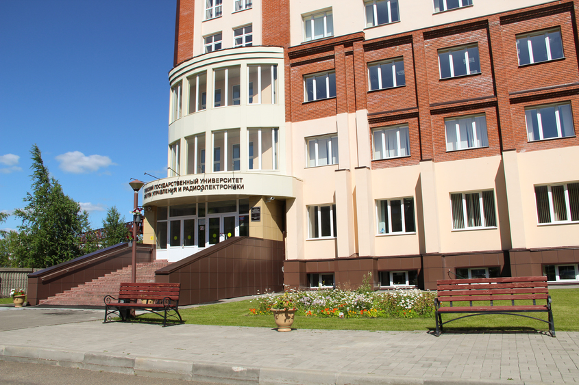

{{ _('"Laboratoriya algoritmov i tekhnologij issledovaniya diskretnyh struktur" (LATIDS) of the Faculty of "KSUP"') }}
{{ _('Leading Researcher') }}
{{ _('Kruchinin Dmitry Vladimirovich') }}
{{ _('Candidate of Physical and Mathematical Sciences') }}
{{ _('Head of the Laboratory') }}
{{ _('Leading Researcher') }}
{{ _('Kruchinin Dmitry Vladimirovich') }}
{{ _('Candidate of Physical and Mathematical Sciences') }}
{{ _('Head of the Laboratory') }}